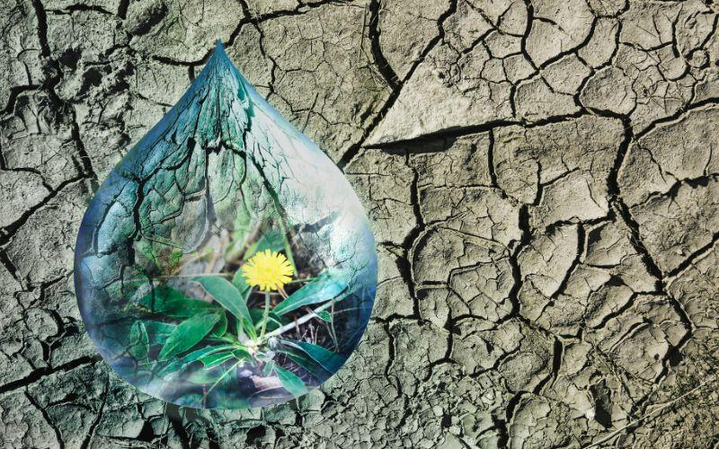

El agua agrícola es el agua que se utiliza para cultivar productos frescos y mantener al ganado. El uso de agua agrícola permite cultivar frutas y verduras y criar ganado, que es una parte principal de nuestra dieta.
El agua agrícola se utiliza para riego, pesticidas, aplicaciones de fertilizantes, enfriamiento de cultivos (por ejemplo, riego ligero) y control de heladas.
Según el Servicio Geológico de los Estados Unidos (USGS), el agua utilizada para el riego representa casi el 65 por ciento de las extracciones de agua dulce del mundo, excluida la energía termoeléctrica.
Parte del agua que utilizan las granjas para el riego proviene de ríos y arroyos, ya sea a través de la extracción superficial o de pozo. Esto se debe en gran parte a que las demandas máximas de riego agrícola superan lo que puede proporcionar el suministro de la red pública.
Hay algunos cultivos, como las fresas, que se cultivan en unidades hortícolas más pequeñas, que dependen del suministro de agua de la red. En consecuencia, la agricultura requiere grandes volúmenes de agua dulce.
Las granjas de ganado lecheras y de pastoreo tienden a obtener una mayor proporción del agua que utilizan de agua dulce.
Dadas estas diversas fuentes de agua, es importante que los agricultores puedan controlar la calidad del agua que utilizan para estos diversos fines agrícolas.
La calidad del agua es tan esencial para las plantas y los cultivos como para el ganado. Las infecciones fúngicas persistentes en las plantas a menudo pueden ser el resultado de contaminantes.
El cultivo de flores de corte, en particular, es susceptible a las esporas de hongos, que prosperan en agua contaminada.
Las biopelículas pueden causar desoxigenación en los suministros de agua, lo que conduce a un suelo con deficiencia de oxígeno, privando a las plantas del oxígeno que necesitan.

Los animales necesitan agua para su sano desarrollo y crecimiento. Básicamente, la calidad de los productos finales, como la carne y la leche, depende de la calidad de la alimentación animal, incluida el agua.
Para mantener su ingesta de alimento, los animales necesitan acceso a un suministro de agua disponible que no esté contaminado.
El ganado consume grandes cantidades de agua, por lo que siempre existe el riesgo de que ingiera contaminantes.
Estos contaminantes incluyen sales minerales, metales pesados, toxinas, bacterias y heces de animales.
Los contaminantes en el agua potable del ganado pueden causar infertilidad y baja producción de leche; pueden causar problemas de fertilidad, enfermedades, enfermedades y la muerte.
Los usos eficaces y seguros del agua en la agricultura dan como resultado un buen rendimiento de los cultivos y la producción ganadera. Pero la mala calidad del agua puede tener un impacto negativo significativo en el crecimiento de los cultivos, el bienestar y la salud de los animales y, en última instancia, el rendimiento económico.
Los contaminantes en el agua agrícola pueden dañar la calidad de los cultivos de plantas, la producción de leche y la salud y longevidad de los rebaños de animales.
El principal riesgo proviene de las bacterias, que se forman en biopelículas en los suministros de agua agrícolas.
Las biopelículas pueden ser particularmente resistentes a la limpieza y desinfección y pueden propagar la contaminación ampliamente.
Donde hay agua en reposo en tanques o tuberías, comúnmente de agua dulce, a menudo habrá una acumulación de biopelícula. También puede aparecer en agua corriente sin tratar.
Las bacterias de las biopelículas pueden tener efectos devastadores tanto en plantas como en animales. Los patógenos pueden pasar por alto las medidas de protección, especialmente si el agua agrícola está contaminada.
Es importante desinfectar el agua utilizada en agricultura. Esto ayudará a proteger la calidad de las plantas y los cultivos, y protegerá al ganado de enfermedades y dolencias.
Cualquier desinfectante que use debe ser lo más efectivo posible y trabajar contra la mayor variedad posible de patógenos.
El equipo de riego puede ser una fuente de patógenos. Los sistemas de recirculación de agua, por ejemplo, pueden esparcir esporas de moho por todo un cultivo de invernadero.
Por lo tanto, debe rociar todo el equipo de riego, como aspersores y comederos superiores, con desinfectante.
Las instalaciones para beber y los tanques para el almacenamiento de agua también requieren una desinfección regular.Debe hacer esto al menos dos veces al año.
Junto con las precauciones básicas, como asegurarse de que no haya cadáveres de animales o estiércol en los suministros de agua, debe limpiar los comederos, baldes y tazas con mucha frecuencia, como parte de una rutina establecida.
Aísle las líneas de suministro de agua y agregue la concentración recomendada de desinfectante a su tanque o sistema de agua. Enjuague el sistema, luego vuelva a llenar y aplique desinfectante a este suministro.